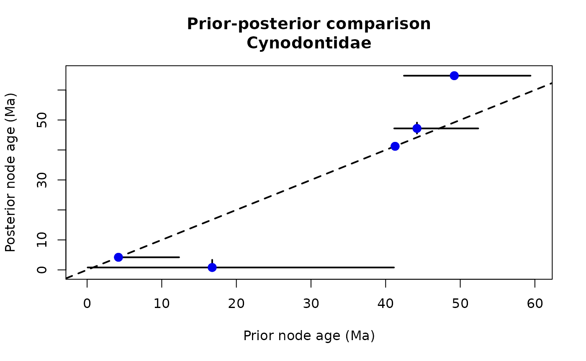
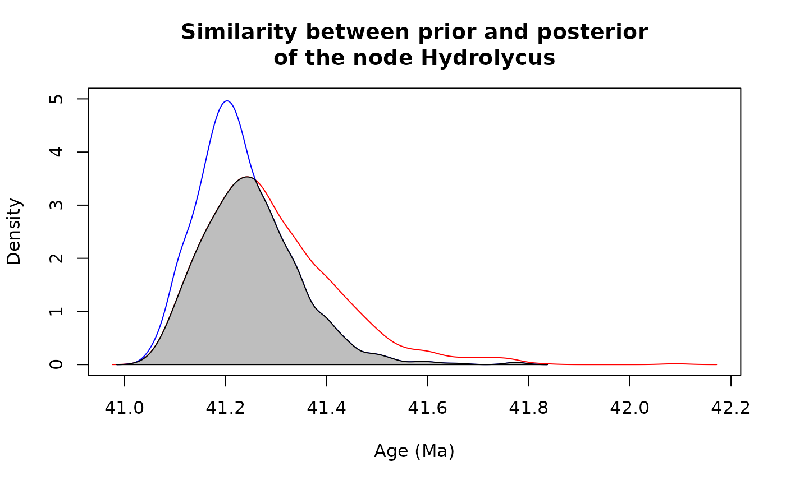

Prior-Posterior comparisons
Gustavo A. Ballen and Sandra Reinales
Source:vignettes/prior_posterior_comparisons.Rmd
prior_posterior_comparisons.RmdAfter carrying out a divergence time analysis with
Beast2, for example, we might be interested in comparing
the prior and the posterior of node ages. We can use the function
crossplot to generate a plot where the x-axis represents
one analysis and the y-axis another, for instance, prior versus
posterior:
# load the package
library(tbea)
# crossplot operates over files or dataframes. Let's create
# two dataframes to exemplified the desirable structure of input data
log1 <- data.frame(sample=seq(from=1, to=10000, by = 100),
node1=rnorm(n =100, mean=41, sd=0.5),
node2=rnorm(n =100, mean=50, sd=1),
node3=rnorm(n =100, mean=25, sd=1))
log2 <- data.frame(sample=seq(from=1, to=10000, by = 100),
node1=rnorm(n =100, mean=41, sd=0.2),
node2=rnorm(n =100, mean=50, sd=0.8),
node3=rnorm(n =100, mean=25, sd=0.5))
head(log1)## sample node1 node2 node3
## 1 1 40.29998 49.61279 24.57062
## 2 101 41.12766 49.21457 26.36046
## 3 201 39.78137 48.94326 24.92914
## 4 301 40.99721 49.20446 24.72785
## 5 401 41.31078 48.24372 22.55332
## 6 501 41.57421 49.30946 25.06549
# run crossplot over nodes 1 and 2 using 'idx.cols' instead of 'pattern', and
# plot the mean instead of the median.
crossplot(log1, log2,
idx.cols=c(2,3),
stat="mean",
bar.lty=1,
bar.lwd=1,
identity.lty=2,
identity.lwd=1,
extra.space=0.5,
main="My first crossplot",
xlab="log 1",
ylab="log 2",
pch=19)
# now, load empirical data
data(cynodontidae.prior)
data(cynodontidae.posterior)
# as crossplot operates also over files, let's create temporal
# files for illustration
write.table(cynodontidae.prior, "prior.tsv",
row.names=FALSE, col.names=TRUE, sep="\t")
write.table(cynodontidae.posterior, "posterior.tsv",
row.names=FALSE, col.names=TRUE, sep="\t")
# crossplot
crossplot(log1="prior.tsv",
log2="posterior.tsv",
stat="median",
skip.char="#",
pattern="mrca.date",
bar.lty=1,
bar.lwd=2,
identity.lty=2,
identity.lwd=2,
main="Prior-posterior comparison\nCynodontidae",
xlab="Prior node age (Ma)",
ylab="Posterior node age (Ma)",
pch=20, cex=2, col="blue2")
This kind of plot has been used in the literature when comparing
prior and posterior MCMC samples, as well as when comparing the same
kind of estimates coming from different independent runs or types of
analysis. The function measureSimil integrates the area
under the curve defined as the intersection between both distributions.
It is a descriptive measure of how similar two distributions are. The
function can both plot the resulting distributions and their
intersection, as well as print out its value, or skip the plot and just
return the value:
# integrate the area under the curve
measureSimil(d1=cynodontidae.prior$mrca.date.backward.Hydrolycus.,
d2=cynodontidae.posterior$mrca.date.backward.Hydrolycus.,
ylim=c(0, 5),
xlab="Age (Ma)",
ylab="Density",
main="Similarity between prior and posterior\nof the node Hydrolycus")
## [1] 0.8078552
# file cleanup
file.remove("prior.tsv")## [1] TRUE
file.remove("posterior.tsv")## [1] TRUE